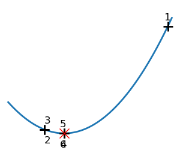
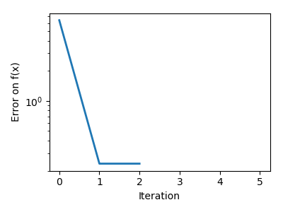
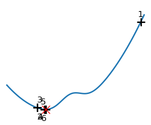
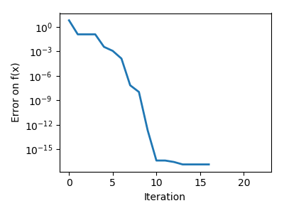

Note
Click here to download the full example code
2.7.4.7. Brent’s method¶
Illustration of 1D optimization: Brent’s method
- 
- 
- 
- 
Out:
Converged at 6
Converged at 23
import numpy as np
import matplotlib.pyplot as plt
from scipy import optimize
x = np.linspace(-1, 3, 100)
x_0 = np.exp(-1)
def f(x):
return (x - x_0)**2 + epsilon*np.exp(-5*(x - .5 - x_0)**2)
for epsilon in (0, 1):
plt.figure(figsize=(3, 2.5))
plt.axes([0, 0, 1, 1])
# A convex function
plt.plot(x, f(x), linewidth=2)
# Apply brent method. To have access to the iteration, do this in an
# artificial way: allow the algorithm to iter only once
all_x = list()
all_y = list()
for iter in range(30):
result = optimize.minimize_scalar(f, bracket=(-5, 2.9, 4.5), method="Brent",
options={"maxiter": iter}, tol=np.finfo(1.).eps)
if result.success:
print('Converged at ', iter)
break
this_x = result.x
all_x.append(this_x)
all_y.append(f(this_x))
if iter < 6:
plt.text(this_x - .05*np.sign(this_x) - .05,
f(this_x) + 1.2*(.3 - iter % 2), iter + 1,
size=12)
plt.plot(all_x[:10], all_y[:10], 'k+', markersize=12, markeredgewidth=2)
plt.plot(all_x[-1], all_y[-1], 'rx', markersize=12)
plt.axis('off')
plt.ylim(ymin=-1, ymax=8)
plt.figure(figsize=(4, 3))
plt.semilogy(np.abs(all_y - all_y[-1]), linewidth=2)
plt.ylabel('Error on f(x)')
plt.xlabel('Iteration')
plt.tight_layout()
plt.show()
Total running time of the script: ( 0 minutes 0.279 seconds)